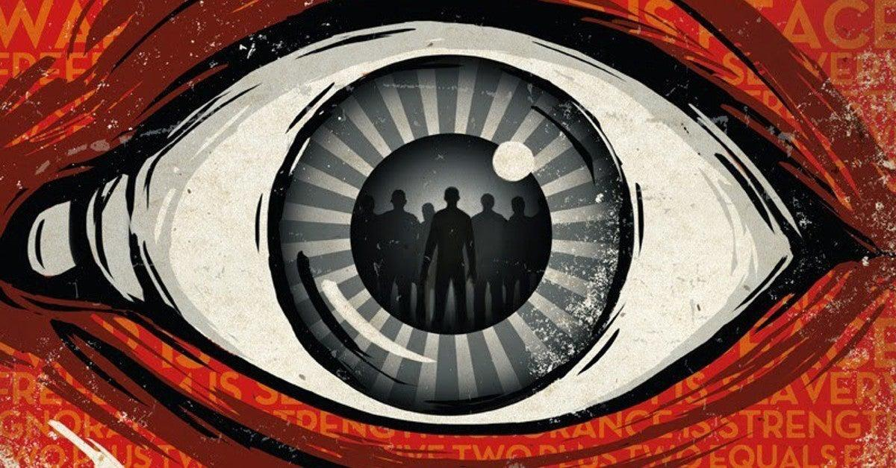

Plot

Short Summary
In George Orwell's 1984, Winston Smith wrestles with oppression in Oceania, a place where the Party scrutinizes human actions with ever-watchful Big Brother. Defying a ban on individuality, Winston dares to express his thoughts in a diary and pursues a relationship with Julia. These criminal deeds bring Winston into the eye of the opposition, who then must reform the nonconformist. George Orwell's 1984 introduced the watchwords for life without freedom: BIG BROTHER IS WATCHING YOU.